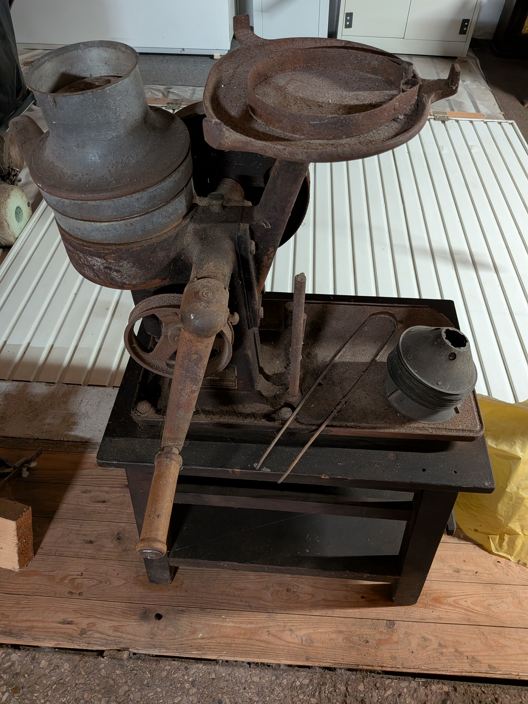

Haushaltsgeräte mit Kurbel
Diese Rubrik zeigt mechanische Haushaltsgeräte, die ohne Strom betrieben werden – durch Handkurbel oder Drehmechanik. Die Geräte sind nach Baujahr sortiert: die ältesten oben.

Kaffeemühle (ca. 1900–1920)
Frühe Handkaffeemühle mit Gusseisen-Mahlwerk und Holzgehäuse. Ein klassisches Haushaltsgerät der Jahrhundertwende.

Passiergerät „Flotte Lotte“ – Variante „Rose‑Marie“ (ca. 1920–1930)
Dieses mechanische Passiergerät ist unter dem bekannten Markennamen „Flotte Lotte“ verbreitet. Die hier gezeigte Ausführung trägt die historische Bezeichnung „Rose‑Marie“, eine frühe Variante des Geräts.
Mit der Handkurbel wird ein Metallflügel über ein Sieb bewegt, um Obst oder Gemüse zu Mus zu verarbeiten. Besonders beliebt war die „Flotte Lotte“ für Apfelmus, Kartoffelpüree und Tomatensaucen.

Fleischwolf Alexanderwerk 10 (ca. 1930–1945)
Kompakter Fleischwolf aus Gusseisen für den Haushalt. Typisch für die Vorkriegs- und Kriegszeit.

Fleischwolf Alexanderwerk 20N (ca. 1940–1955)
Robuster Fleischwolf für Haushalt und kleine Metzgereien. Nachkriegsmodell mit Holzkurbel.

Brotschneider (ca. 1940–1950)
Mechanischer Brotschneider mit Kurbelantrieb. Schneidet Brot gleichmäßig in Scheiben – ein typisches Gerät der frühen Nachkriegszeit.

Dosenverschlussmaschine Lanico TR38 (ca. 1955–1965)
Handbetriebene Maschine zum Verschließen von Konservendosen. Eingesetzt in Haushalten und kleinen Betrieben.
Die Konserventechnik geht auf Heinrich Züchner zurück, der 1830 die erste Konserve in Deutschland fertigte.

Trommelreibe / Kurbelreibe Modell 820 (Schulte, ca. 1950–1970)
Diese mechanische Trommelreibe – auch als Kurbelreibe oder Mandelmühle bezeichnet – stammt vom deutschen Hersteller Schulte und trägt die Modellnummer 820. Das Gerät besteht aus einem robusten Metallgehäuse mit einer handbetriebenen Kurbel und einer austauschbaren Reibtrommel.
Solche Reiben wurden in den 1950er bis 1970er Jahren in vielen Haushalten eingesetzt, um Käse, Nüsse, Mandeln oder Gemüse zu zerkleinern. Die stabile Bauweise und der Holzgriff sind typisch für die Nachkriegszeit.

Zentrifuge (ca. 1950–1960)
Mechanische Haushaltszentrifuge zum Trennen von Flüssigkeiten, z. B. Rahm von Milch.

Kohlschneider (ca. 1950–1960)
Kurbelbetriebener Hobel zum Schneiden von Weißkohl für Sauerkraut.

Kartoffelpüreegerät (ca. 1950–1960)
Mechanisches Gerät zum Pressen von Kartoffeln – Vorläufer moderner Kartoffelpressen.

Schneebesen mit Kurbel (ca. 1950–1960)
Kurbelbetriebener Schneebesen mit zwei Rührflügeln. Ideal zum Schlagen von Sahne oder Eiweiß.

ALKA Kurbelgerät (ca. 1950–1965)
Mechanisches Haushaltsgerät der Marke ALKA. Vermutlich Reibe- oder Schneidmaschine mit Kurbelantrieb.

BME5 Kurbelgerät (ca. 1960–1970)
Spätes mechanisches Haushaltsgerät, Übergangszeit zu elektrischen Küchenmaschinen.

Alexanderwerk 7 (ca. 1960–1970)
Spätes Kurbelgerät der Firma Alexanderwerk. Kompakte Bauform, typisch für die 1960er Jahre.